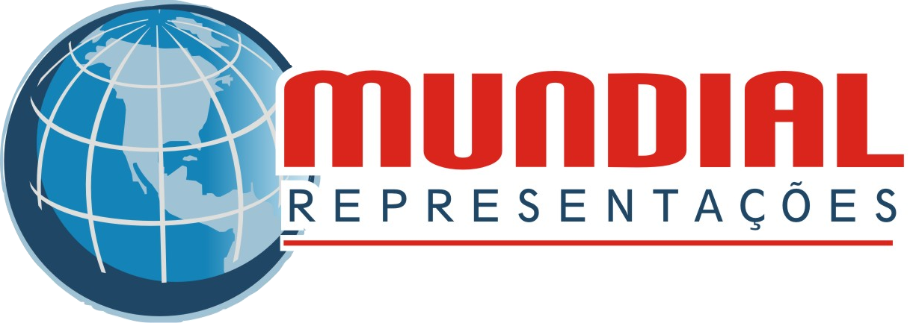
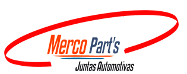
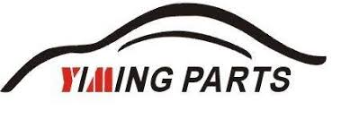
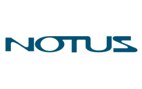
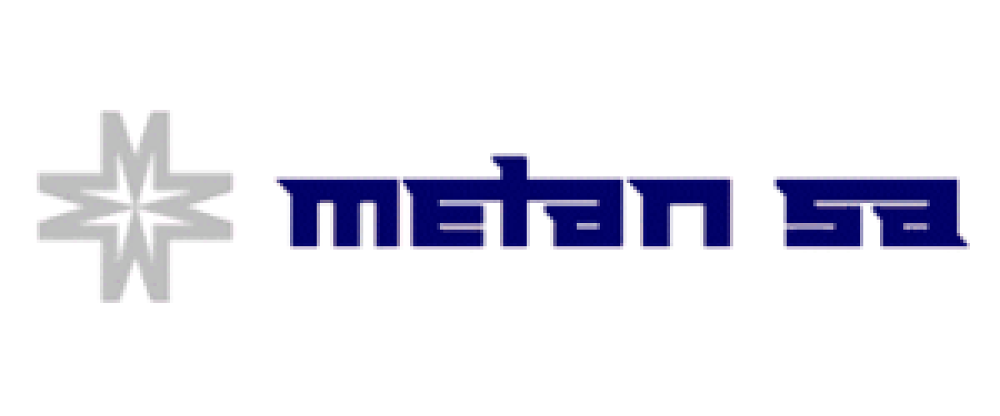
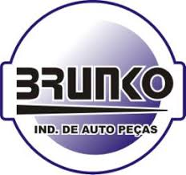
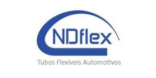
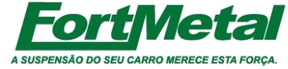

Quem Somos
A Mundial é um escritório de representação comercial de peças para veículos automotores, atuando a mais de 15 anos nesse ramo e representando algumas das melhores Fábricas de peças automotivas em todo o estado do Rio Grande do Sul. Dispomos de uma equipe capacitada para atender com agilidade e eficiência os nossos clientes a fim de esclarecer qualquer tipo de dúvida quanto aos produtos que trabalhamos.
Missão
Oferecer produtos de qualidade aos nossos clientes proporcionando satisfação e tranquilidade.
Visão
Ser referência no mercado de auto peças atendendo nossos clientes com agilidade e competencia.
Valores
Buscar a confiança dos nossos clientes através da ética e transparência nas negociações.
Nossas Marcas

A Merco Part's é uma empresa brasileira fabricante de Juntas automotivas, estando a mais de 16 anos no mercado, com produtos de ótima qualidade, devido à utilização de matéria prima de primeira linha, equipamentos modernos e profissionais qualificados, atendendo sempre as especificações técnicas da indústria automotiva. Temos uma Linha completa de juntas e Retentores para vans, pick - ups, linha leve nacional e importada. Dentre os produtos comercializados, podemos citar jogos de juntas completos, kit juntas superiores, juntas do cabeçote, tampa de válvulas, coletores de escape/admissão, saídas de escapamentos, cárter.

A YIMING PARTS é uma indústria de auto peças fundada em 1996 que possui uma equipe altamente qualificada com profundo conhecimento dos produtos que fabrica, desenvolvendo soluções inovadoras com o apoio de equipamentos de ultima geração, incluindo um rígido controle da matéria prima utilizada na fabricação dos seus produtos. Seus produtos tais como bomba d'água, amortecedor, junta homocinética, bandejas, cruzetas, trizetas, mola gás e terminais são fabricados visando qualidade e bom desempenho. A YIMING PARTS tem como objetivo o compromisso com a qualidade, não só de seus produtos, mas na totalidade de seus processos industriais e comerciais, visando sempre à satisfação constante de seus clientes.

A Notus é uma empresa especializada nas áreas de arrefecimento e climatização de veículos automotores, oferecendo, a mais de 10 anos, atendimento personalizado, através de suporte técnico, desenvolvimento de estratégias para atender as necessidades do mercado nacional e internacional.

A Metan trabalha a mais de 40 anos com solida experiência no mercado de peças de reposição, na linha de cabeçotes Volkswagem.

A Brunko é fabricante de blocos e cabeçotes Mercedes, sendo referência em qualidade e atendimento. Possui infra-estrutura precisa e o conhecimento das necessidades de seus consumidores para atender e superar suas expectativas.

A NDflex é uma indústria de Mangueiras e Tubos Flexíveis para a Linha Automotiva e Industrial. Em constante evolução, desenvolve mangueiras para sistemas de alimentação e retorno de combustíveis (gasolina, etanol, diesel) para veículos automotivos, além de produtos para indústria como mangueiras e tubos para sistemas pneumáticos e hidráulicos.

A FortMetal fabrica bandejas de suspensão dentro dos mais rígidos padrões de qualidade e com materiais de primeira linha.